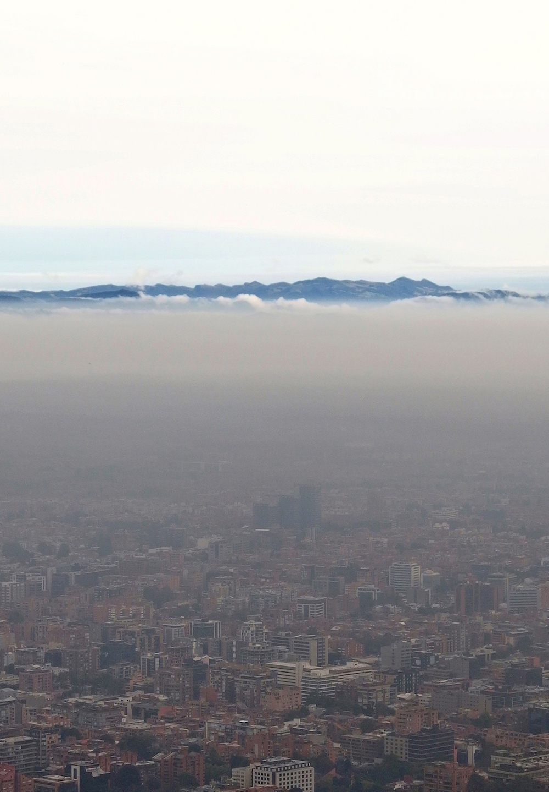
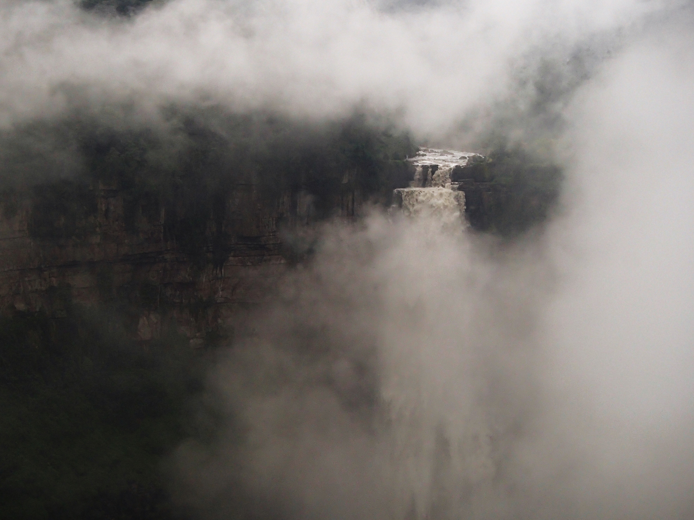
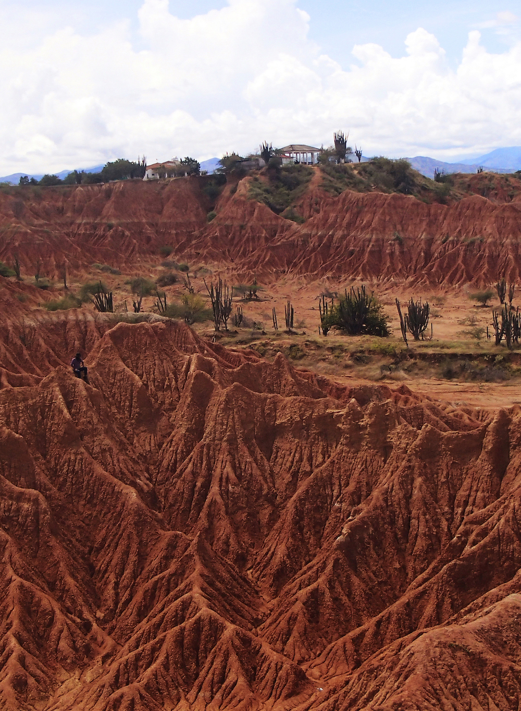
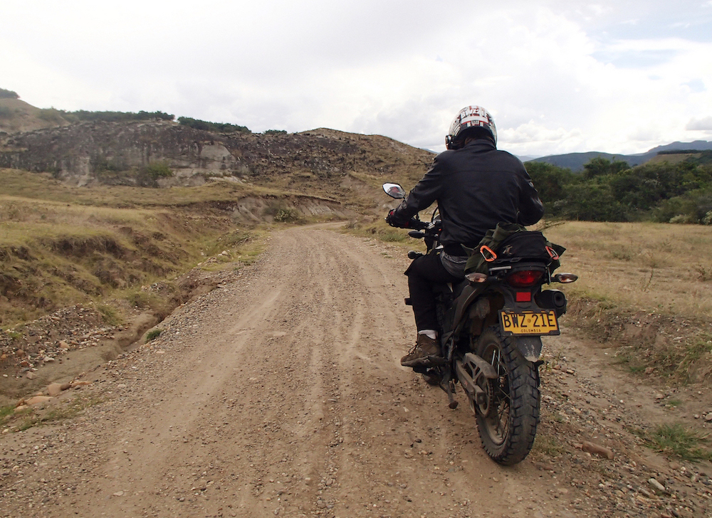
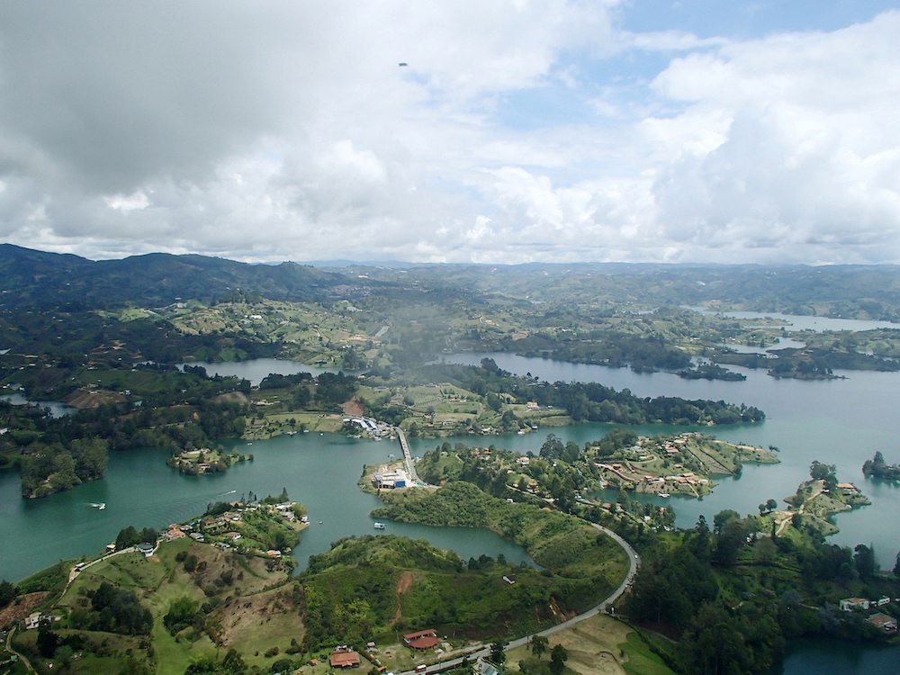
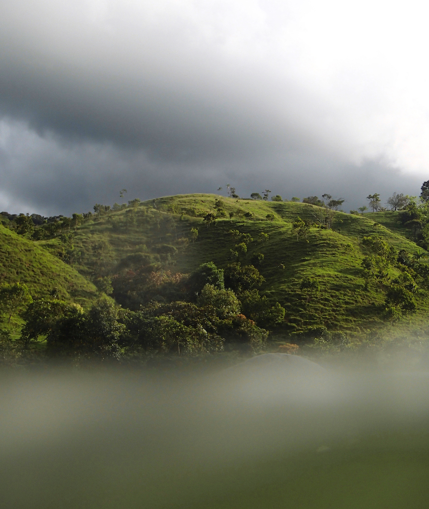
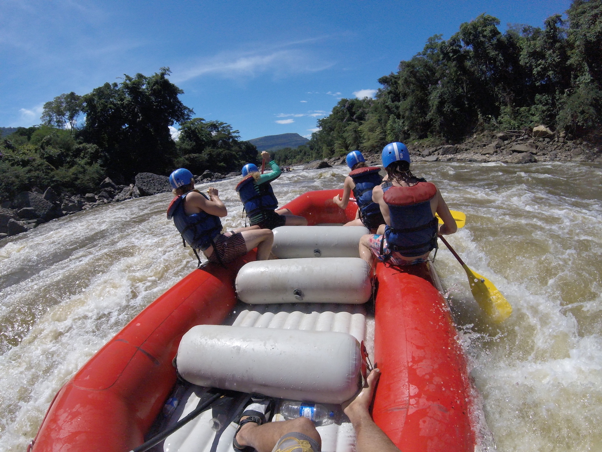
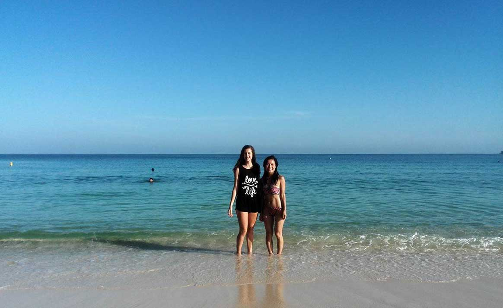

Colombia
May 24 to August 9, 2017
“Cruza el portal y estarás en el sendero. Pasar el umbral significa tonar una decisión, iniciar un camino. Un proceso de aprendizaje personal.”

Bogotá
Colombia’s capital city sparkles with life underneath a consistently grey sky. It’s located at 2,640 metres of elevation and the temperature remains constant around 18°C. The many neighbourhoods which make up Bogotá bring together a variety of restaurants, museums, clubs and offices, all of which are connected via the TransMilenio bus service. It serves as a subway, providing reliable and inexpensive transportation, though becomes unbearably packed during rush hours.
Make sure to have I.D. with you when making purchases with a bank card throughout Colombia, and like in all cities, be alert when walking around alone at night. In general though, I always felt safe throughout the country and welcomed by the locals!
Make sure to have I.D. with you when making purchases with a bank card throughout Colombia, and like in all cities, be alert when walking around alone at night. In general though, I always felt safe throughout the country and welcomed by the locals!

The view from Quebrada La Vieja

Informative graffiti tours take place daily in La Candelaria, the touristy area of Bogotá. In the 3 hours, a guide will take you through the history of the city – from politics and uprisings to religion – through the power of art.

Salto Del Tequendama, near Soacha
Desierto de la Tatacoa





Medellín
The 45 minute drive from José María Córdova International Airport of Medellin to the “City of Eternal Spring” is along a winding highway down the side of the mountain. At night, simultaneous lighting strikes race across the sky and the lights from the city shimmer like stars in the dark valley. In the city, massive trees line the chaotic streets swarming with motorcyclists, cars, minibuses and food trucks.

I learnt how to motorbike on the curvy Medellín roads with Nick (terrified) on the back of the motorcycle. We would frequently bike to remote towns in the valleys and come back to our favourite mirrador by the abandoned brick home to watch the daylight merge into a star-filled sky. As darkness would fall, up to three simultaneous lightning storms could be seen in the distance.
Guatapé

El Peñón de Guatapé, a 740ft boulder which emerges abruptly from the plain countryside, has been a place of warship ever since the indigenous Tahamí, and was declared a national monument in the 1940s. Staircases zip-zag up The Rock, leading to sweeping views of Guatapé's lagoons. In the village, all the houses are decorated with colourful bas-reliefs.

Salento


I met a woman in Medellin through Couchsurfing, a free culture exchange website which lets you sleep in the host's home for free, and together we traveled to Salento. This coffee capital of Colombia is also home to the Valle de Cocora which is a tropical forest with towering palm trees.
San Gil, Santander Department
If adventure is what you’re looking for, this town is just for you. San Gil offers class 3-5 white water rafting, caving, bungee jumping and paragliding, all of which I managed to squeeze in during my stay!

Outside of the town lays Barichara, a hamlet with cobbled streets and colonial architecture which is accessible via colectivo buses. Just past it is the even smaller town of Guane composed of a total of 10 streets, 4 restaurants, 1 motel and 1 cathedral. It's possible to walk to Guane from Barichara along a dirt path in about 2 hours.
Cartagena

Corales del Rosario National Park with Hitomi